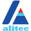

Competitor ads, company by company.
Where each Odoo competitor in Singapore buys paid ads, and what kind of ads they are — read per company from the public Google, Meta and LinkedIn ad libraries on 24 Aug 2026.
1 Company by company
Ordered by ad volume. Counts are live creatives in each library, filtered to the company's own verified advertiser account. "In SG" = ads shown in Singapore.
| Company | Advertises on | Kind of ads | What the ads are |
|---|---|---|---|
| HashMicro not a partner — Odoo-fork rival · PH + Indonesian entities | Google Search Google Display YouTube | ~2,000 on Google region-wide (~600 search text, ~1,100 display image, ~300 video); 91 shown in SG. No active Meta ads found. | Full-funnel Google: search on ERP keywords, display banners, YouTube product videos. The biggest ad operation in the niche by far — but Google-only. |
| Port Cities Gold · 63 refs (#2 of 3 SG Gold) · pays via Port Cities International Ltd, Hong Kong | Google Display Google Search | ~200 on Google worldwide: ~160 display image, 43 search text, 0 video. 25 shown in SG. No Meta, no LinkedIn. | Mostly remarketing banners that follow site visitors, on top of a smaller set of search ads. PSG-vendor messaging on the landing pages. |
| Captivea Ready · 5 refs · global "Captivea Group" account | Google Search | 36 on Google — all 36 search text ads, 0 image, 0 video. 7 shown in SG. Nothing on Meta or LinkedIn. | Pure search-keyword play run globally from one group account; Singapore gets a slice of it. |
| Neu Media Technology claims Silver, not in the SG directory · verified under founder "Nicholas Thiang" | Google Display Google Search YouTube LinkedIn | 22 on Google, all shown in SG: 15 display image, 6 search text, 1 video. Promoted events on LinkedIn. No Meta. | Display-led Google mix, plus paid promotion of its Odoo webinars as LinkedIn events — the only SG player spending on LinkedIn. |
| Serpent Consulting Ready · 9 refs · pays via the Indian parent | Google Search | 18 on Google — all search text. Only 2 shown in SG; the rest target other markets. | Search ads from the Indian head office; Singapore is barely targeted. |
| Omnisoft Technologies Silver · 36 refs — top Silver in SG | Google Search Google Display YouTube | 16 on Google (8 search text, 5 display image, 3 video); 9 shown in SG. No Meta, no LinkedIn. | Search ads on "ERP solutions Singapore" plus sitelink-heavy brand ads ("Trusted Partner", pricing plans) and a few YouTube videos ("Odoo — Level Up"). |
 Alitec Gold · 107 refs — #1 of 3 SG Gold, most-referenced partner in SG |
Google Search Google Display YouTube | 5 on Google (2 search text, 2 display image, 1 video); 4 shown in SG. No Meta, no LinkedIn. | Small always-on set; the live search ad ("Management software") lands on its CTC-grant page — grant funding is the pitch. |
| SG-Soft / SGEEDE Silver · 17 refs · pays via PT SGEEDE, Indonesia | Google Search Facebook | 5 on Google — all search text, 2 shown in SG. 1 active Meta ad delivering into SG. | Indonesian-market ads that spill into Singapore: Bahasa-language Facebook ad offering a free consultation (lists an SG phone number), plus a few search ads. |
| Applivon Ready · 15 refs — most-referenced Ready partner | Google Search | 1 search text ad, shown in SG. | A single ad — token presence. |
| ICS Compute not a directory partner · Indonesian cloud firm | Facebook Instagram | 3 active Meta ads delivering into SG. Nothing on Google for SG. | Bahasa-language image ads selling Odoo Enterprise packages (licence + hosting + implementation), "Contact us" objective. |
| SmarterWay.AI not a partner — ERP comparison site | Facebook Instagram | 1 active Meta ad (2 versions) in SG. | Lead-magnet ad: "Compare 20+ ERP platforms" guide behind a registration form, "Download" objective. Collects the same leads everyone here wants. |
| Facebook Instagram | 2 active Meta ads in SG. The only Singapore directory partner with any Meta ads. | The two image ads from page 2 — free consultation / workflow review, "Book now". |
Top partners on Odoo's official directory — checked 25 Aug 2026
Tier and reference counts as displayed on odoo.com/partners. Singapore has only 3 Gold partners out of 19 listed — and the biggest ad spender in this audit (HashMicro) is not in the directory at all.
| Singapore — all 3 Gold | References | Ad activity (from the audit above) |
|---|---|---|
| 1 · Alitec Pte Ltd | 107 | 5 Google ads — small always-on set |
| 2 · Portcities Singapore | 63 | ~200 Google ads worldwide, 25 in SG |
| 3 · Brainvire Infotech INC | 22 | Zero ads in any library |
Top partner per Asian country
The #1 partner in each market's directory (Gold unless the country has none). Ordering within a tier is Odoo's own.
| Country | Top partner | Tier | Refs | Market size |
|---|---|---|---|---|
| Singapore | Alitec Pte Ltd | Gold | 107 | 19 partners · 3 Gold |
| Malaysia | Computs Sdn Bhd the only Gold | Gold | 37 | 25 partners · 1 Gold |
| Indonesia | Arkana Indonesia | Gold | 130 | 73 partners · 6 Gold |
| Thailand | IT as a Service Co., Ltd. | Gold | 54 | 42 partners · 2 Gold |
| Vietnam | A1 Consulting JSC, Hanoi the only Gold | Gold | 94 | 34 partners · 1 Gold |
| Philippines | Odev Solutions, Quezon City | Gold | 74 | 39 partners · 4 Gold |
| Hong Kong | Asta Systems, Wanchai no Gold exists in HK | Silver | 56 | 21 partners · 0 Gold |
| India | Oodu Implementers, Chennai | Gold | 121 | 176 partners · 10 Gold |
| Japan | Portcities Japan, Tokyo no Gold exists in JP | Silver | 19 | 10 partners · 0 Gold |
2 Not advertising
Eleven of the 19 directory partners show no ads in any of the three libraries.
| Tier | Companies with zero paid ads |
|---|---|
| Gold | Brainvire Infotech |
| Silver | Falinwa · Accentuate |
| Ready | Ninaad Global · Nexus IT Consulting · ATT Infosoft · Cybermax Asia · Autopack · Digital Futures Consultancy · Honest Principle · MISSION+ |
Most of the market runs no paid media at all — the directory listing, referrals and SEO carry them.
3 How this was checked
Three public libraries, one company at a time.
| Library | Filter used per company | What it shows |
|---|---|---|
| Google Ads Transparency Center | The company's website domain, then its verified advertiser account; region set to Singapore and to worldwide; format filtered to text and video (images = the remainder) | Every ad the account has run on Search, Display and YouTube, with the paying legal entity |
| Meta Ad Library | Country = Singapore, active ads, searched per company name and for the keyword "Odoo" | Every ad currently delivering on Facebook and Instagram in Singapore |
| LinkedIn Ad Library | Keyword "Odoo", country Singapore; company-name lookups per advertiser | Sponsored content, message ads and promoted events shown in Singapore |
| Odoo partner directory | odoo.com/partners filtered per country (SG, MY, ID, TH, VN, PH, HK, IN, JP), 25 Aug 2026; tier badges and reference counts as displayed, double-checked against the grade-filtered listings | Official tier (Gold / Silver / Ready), reference count and directory rank for every listed partner |